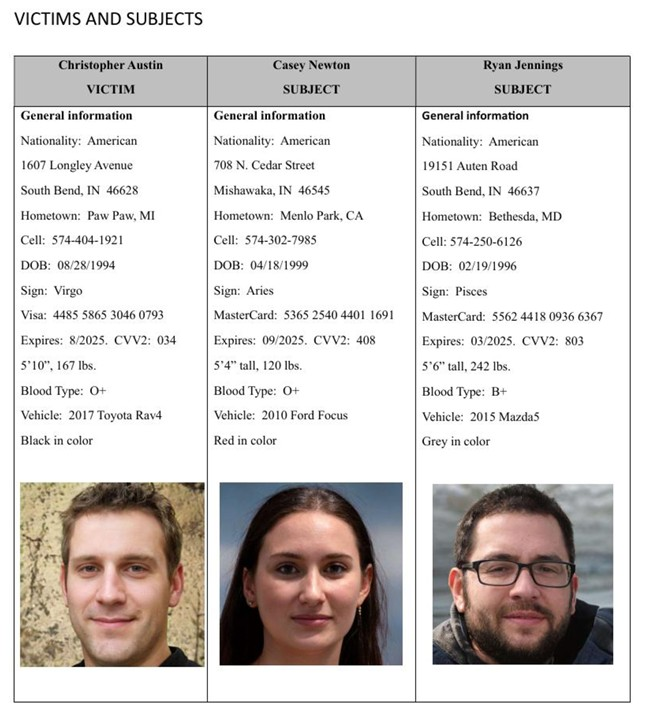
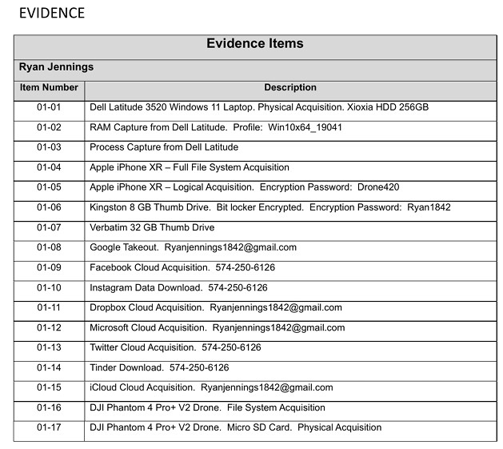

This project focused on conducting a digital forensic investigation using Magnet Forensics to analyze a computer involved in a criminal case. I examined digital evidence such as browser history, emails, downloads, user accounts, passwords, media files, and cloud artifacts to answer investigative questions and document findings in a forensic report.